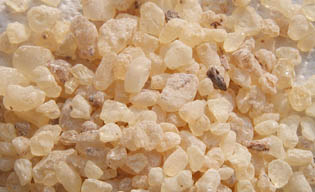

Le
médium maigre au dammar

Ce produit simple
à réaliser est destiné à la peinture à l'huile, mais son
procédé de
fabrication peut être transposé pour de nombreuses techniques de mise en
solution de résines (voir note ci-dessous).
Signalons par exemple
que l'on peut réaliser un
fixatif en substituant de
l'éthanol
à l'essence dans la recette ci-dessous. En utilisant de la
gomme
laque à la place de la gomme dammar, on réalise le liant de la laque
commune des ébénistes. Avec de la gomme arabique
et de l'eau distillée, on fait une eau gommée pour l'aquarelle.
Mais revenons au médium dammar. Il ne nécessite que deux substances : la résine d'un arbre
(voir résine dammar) et une essence commune pour
la peinture.
Sans être véritablement oléagineux, il n'est pas pour autant un vernis au sens strict.
On l'appelle parfois - à tort - "vernis dammar" simplement parce
qu'il est maigre, ce qui est abusif. Il
peut être employé :
* tel quel ou adjoint d'huile et d'autres substances, comme médium
* sous forme plus concentrée, comme vernis.
Indéniablement, ce produit sans huile peut parfaitement être utilisé comme médium, sauf dans certains cas où l'emploi d'un adjuvant nettement
gras est indispensable (supports particulièrement souples).
Son faible prix, sa bonne qualité, la facilité de sa fabrication et
l'aisance de sa mise en oeuvre en font un auxiliaire de tout premier plan.
On lui reproche d'être cireux, mais il peut être déciré.
En cas de problème, lire
ce courrier.
Précautions
Elles sont évidentes : sans être du gaz de ville,
l'essence est inflammable. Il vaut mieux bien reboucher les contenants, les
stocker hors de portée des enfants et travailler en milieu calme suffisamment
ventilé.
C'est surtout pour des quantités
importantes (préparation et stockage collectifs dans le cadre d'un cours par
exemple) ou des contextes particuliers qu'il faut prendre davantage de
précautions. On peut alors consulter le Reptox
et si nécessaire, les pompiers.
Ingrédients et matériel (mesures en
poids)
* gomme dammar : 33 à 50% du poids total
(plus la quantité est importante, plus le produit se rapproche d'un vernis)
* essence de pétrole raffinée ou essence de térébenthine
rectifiée (67 à 50%)
* des pièces de tissus fin (l'idéal est le
nylon)
* un bocal
à goulot large
* un autre bocal ou un flacon de même contenance.
Procédé :
* Mettre en poudre
par broyage simple les morceaux de gomme
dammar.
*
Disposer la poudre dans un ou plusieurs sacs de textile fin, pièces de
tissus à refermer comme une bourse, avec un bout de ficelle.
*
Placer les sacs dans un bocal
*
Verser l'essence
*
Fermer hermétiquement

*
Laisser reposer 48 heures
*
Les sacs contiendront encore un volume notable de "restes" particulièrement
cireux et poisseux (voir Les
insolubles in La résine dammar). Jeter ces sacs et transvaser le médium dans le second bocal.
* Etape facultative de
décantation
de la cire.
Après quelques jours, un dépôt cireux commence à se former au fond du contenant.
Ne pas remuer ! Au contraire, pour obtenir la meilleure qualité, c'est-à-dire la
moins cireuse, il peut être bon de laisser décanter
pendant quelques jours puis de transvaser le liquide dans un autre récipient.
Les puristes répéteront l'opération plusieurs fois en allongeant le temps de
décantation.
Beaucoup de peintres ne trouvent pas ces décantations systématiquement nécessaires.
Effectivement, le dammar n'est généralement pas si poisseux et
cireux que certains l'ont dit (cela varie en fonction de la
variété choisie) et par ailleurs, la cire forme un dépôt suffisamment solide au
fond du flacon à condition de lui laisser le temps de se déposer et de durcir,
soit quelques jours.
Note
:
comme mentionné en début d'article, ce procédé peut être utilisé pour préparer de
nombreux autres produits. La gomme et le diluant varient ainsi que la
durée de la
marinade, mais le principe demeure strictement identique.
L'intérêt pédagogique de
l'apprentissage de la préparation d'un médium au dammar est notoire car ce
procédé peut être transposé à d'autres techniques.
Le traitement terminal des dépôts cireux n'est pas universel.
Dans de nombreux cas sans rapport avec la gomme dammar, il n'a pas de raison
d'être.
Retour
début de page